- 00 导读 余晟：我是怎么学习和使用正则的？.md.html
- 00 开篇词丨学习正则，我们到底要学什么？.md.html
- 01 元字符：如何巧妙记忆正则表达式的基本元件？.md.html
- 02丨量词与贪婪：小小的正则，也可能把CPU拖垮！.md.html
- 03 分组与引用：如何用正则实现更复杂的查找和替换操作？.md.html
- 04 匹配模式：一次性掌握正则中常见的4种匹配模式.md.html
- 05 断言：如何用断言更好地实现替换重复出现的单词？.md.html
- 06 转义：正则中转义需要注意哪些问题？.md.html
- 07 正则有哪些常见的流派及其特性？.md.html
- 08 应用1：正则如何处理 Unicode 编码的文本？.md.html
- 09 应用2：如何在编辑器中使用正则完成工作？.md.html
- 10 应用3：如何在语言中用正则让文本处理能力上一个台阶？.md.html
- 11 如何理解正则的匹配原理以及优化原则？.md.html
- 12 问题集锦：详解正则常见问题及解决方案.md.html
- 加餐 从编程语言的角度来理解正则表达式.md.html
- 结束语 使用正则提高你的人生效率.md.html
- 捐赠
04 匹配模式：一次性掌握正则中常见的4种匹配模式
你好，我是涂伟忠。今天我们一起来学习正则中的匹配模式（Match Mode）。
所谓匹配模式，指的是正则中一些改变元字符匹配行为的方式，比如匹配时不区分英文字母大小写。常见的匹配模式有4种，分别是不区分大小写模式、点号通配模式、多行模式和注释模式。我们今天主要来讲一下这4种模式。
需要注意的是，这里的“模式”对应的是英文中的mode，而不是pattern。有些地方会把正则表达式pattern也翻译成模式，你在网上看到的技术文章中讲的正则模式，有可能指的是正则表达式本身，这一点你需要注意区别。
不区分大小写模式（Case-Insensitive）
首先，我们来看一下不区分大小写模式。它有什么用呢？学一个知识的时候，我一般喜欢先从它的应用出发，这样有时候更能激发我学习的兴趣，也更容易看到学习成果。
下面我来举个例子说明一下。在进行文本匹配时，我们要关心单词本身的意义。比如要查找单词cat，我们并不需要关心单词是CAT、Cat，还是cat。根据之前我们学到的知识，你可能会把正则写成这样：[Cc][Aa][Tt]，这样写虽然可以达到目的，但不够直观，如果单词比较长，写起来容易出错，阅读起来也比较困难。
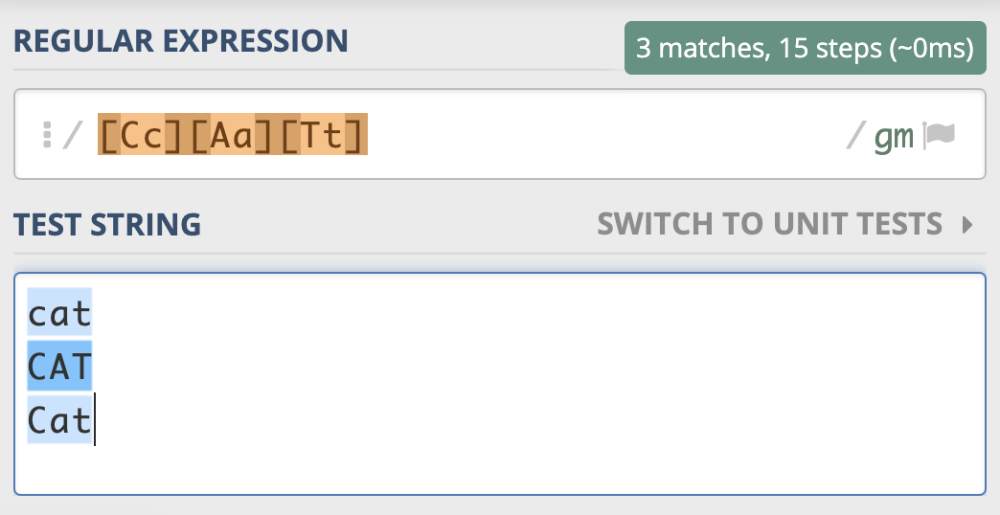
那么有没有更好的办法来实现这个需求呢？这时候不区分大小写模式就派上用场了。
我们前面说了，不区分大小写是匹配模式的一种。当我们把模式修饰符放在整个正则前面时，就表示整个正则表达式都是不区分大小写的。模式修饰符是通过(?模式标识)的方式来表示的。 我们只需要把模式修饰符放在对应的正则前，就可以使用指定的模式了。在不区分大小写模式中，由于不分大小写的英文是Case-Insensitive，那么对应的模式标识就是 I 的小写字母 i，所以不区分大小写的 cat 就可以写成 (?i)cat。
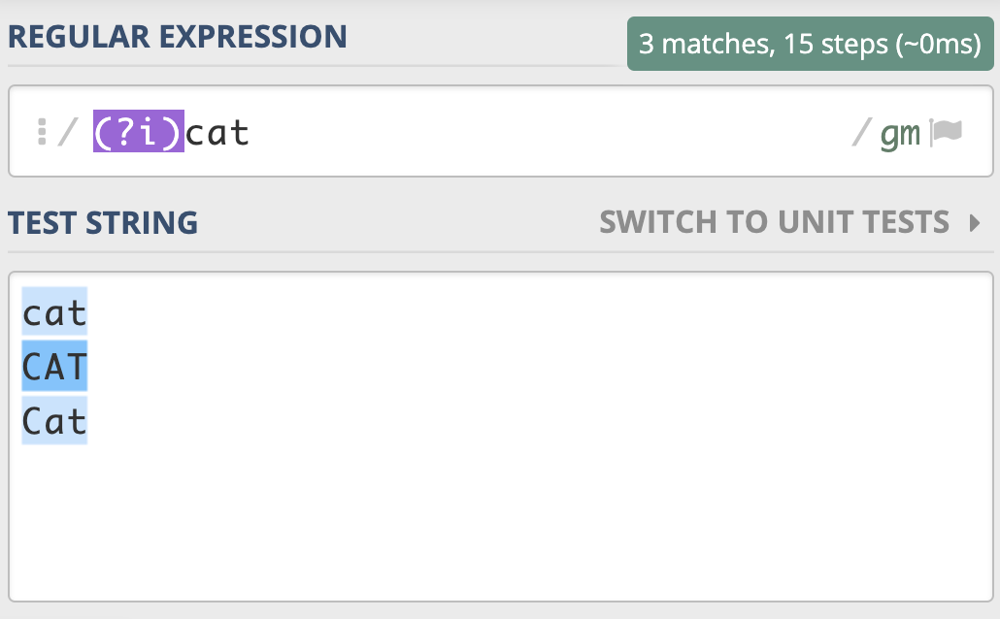
你看，和[Cc][Aa][Tt] 相比，这样是不是清晰简洁了很多呢？
我们也可以用它来尝试匹配两个连续出现的 cat，如下图所示，你会发现，即便是第一个 cat 和第二个 cat 大小写不一致，也可以匹配上。
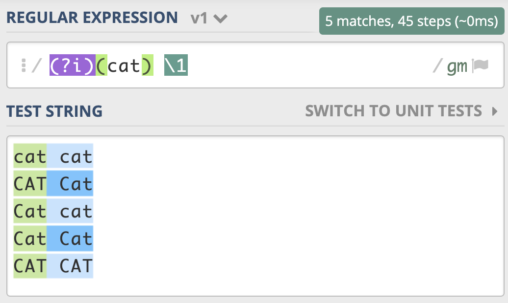
我给到了你一个测试链接，你可以在这里试试不区分大小写模式：
https://regex101.com/r/x1lg4P/1。
如果我们想要前面匹配上的结果，和第二次重复时的大小写一致，那该怎么做呢？我们只需要用括号把修饰符和正则cat部分括起来，加括号相当于作用范围的限定，让不区分大小写只作用于这个括号里的内容。同样的，我在这里给你放了一个测试链接，你可以自己看一下。
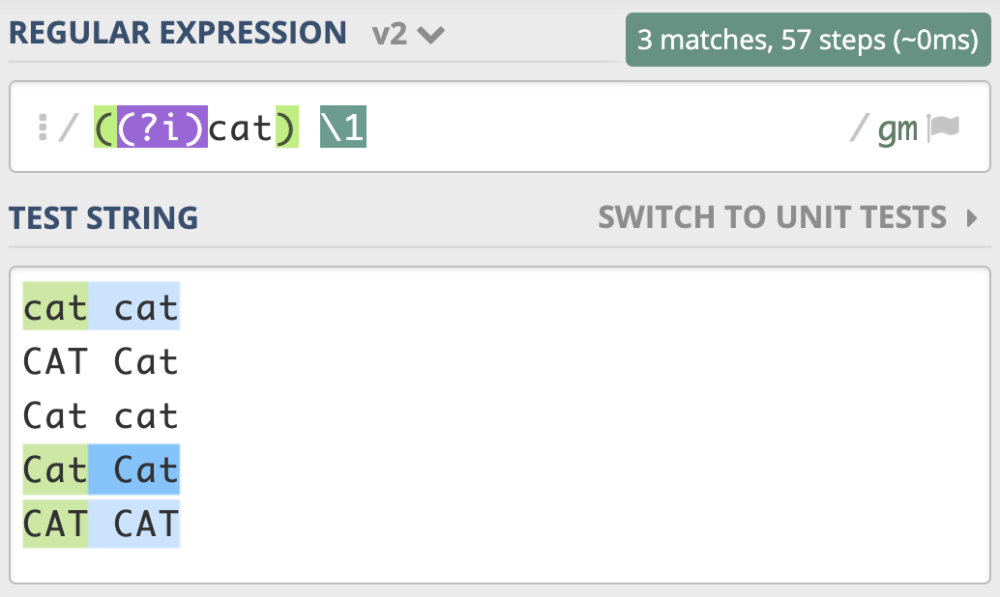- 需要注意的是，这里正则写成了 ((?i)cat) \1，而不是((?i)(cat)) \1。也就是说，我们给修饰符和cat整体加了个括号，而原来 cat 部分的括号去掉了。如果 cat 保留原来的括号，即 ((?i)(cat)) \1，这样正则中就会有两个子组，虽然结果也是对的，但这其实没必要。在上一讲里我们已经讲解了相关的内容，如果忘记了你可以回去复习一下。
到这里，我们再进阶一下。如果用正则匹配，实现部分区分大小写，另一部分不区分大小写，这该如何操作呢？就比如说我现在想要，the cat 中的 the 不区分大小写，cat 区分大小写。
通过上面的学习，你应该能很快写出相应的正则，也就是 ((?i)the) cat。实现的效果如下：
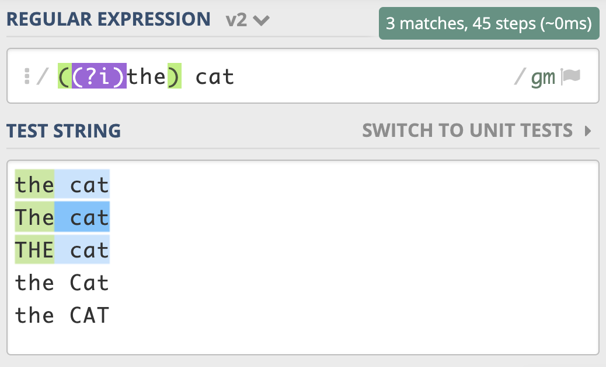
我把部分区分大小写，部分不区分大小写的测试链接放在这里，你可以看一下。
有一点需要你注意一下，上面讲到的通过修饰符指定匹配模式的方式，在大部分编程语言中都是可以直接使用的，但在 JS 中我们需要使用 /regex/i 来指定匹配模式。在编程语言中通常会提供一些预定义的常量，来进行匹配模式的指定。比如 Python 中可以使用 re.IGNORECASE 或 re.I ，来传入正则函数中来表示不区分大小写。我下面给出了你一个示例，你可以看一下。
>>> import re
>>> re.findall(r"cat", "CAT Cat cat", re.IGNORECASE)
['CAT', 'Cat', 'cat']
到这里我简单总结一下不区分大小写模式的要点：
- 不区分大小写模式的指定方式，使用模式修饰符 (?i)；
- 修饰符如果在括号内，作用范围是这个括号内的正则，而不是整个正则；
- 使用编程语言时可以使用预定义好的常量来指定匹配模式。
点号通配模式（Dot All）
在基础篇的第一讲里，我为你讲解了元字符相关的知识，你还记得英文的点（.）有什么用吗？它可以匹配上任何符号，但不能匹配换行。当我们需要匹配真正的“任意”符号的时候，可以使用 [\s\S] 或 [\d\D] 或 [\w\W] 等。
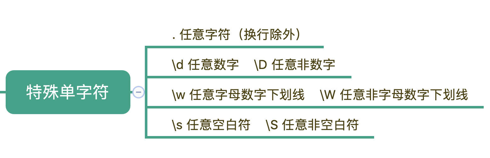
但是这么写不够简洁自然，所以正则中提供了一种模式，让英文的点（.）可以匹配上包括换行的任何字符。
这个模式就是点号通配模式，有很多地方把它称作单行匹配模式，但这么说容易造成误解，毕竟它与多行匹配模式没有联系，因此在课程中我们统一用更容易理解的“点号通配模式”。
单行的英文表示是 Single Line，单行模式对应的修饰符是 (?s)，我还是选择用the cat来给你举一个点号通配模式的例子。如下图所示：
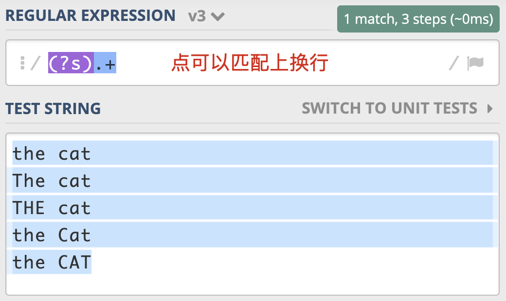
需要注意的是，JavaScript不支持此模式，那么我们就可以使用前面说的[\s\S]等方式替代。在Ruby中则是用Multiline，来表示点号通配模式（单行匹配模式），我猜测设计者的意图是把点（.）号理解成“能匹配多行”。
多行匹配模式（Multiline）
讲完了点号通配模式，我们再来看看多行匹配模式。通常情况下，^匹配整个字符串的开头，\( 匹配整个字符串的结尾。多行匹配模式改变的就是 `^` 和 \) 的匹配行为。
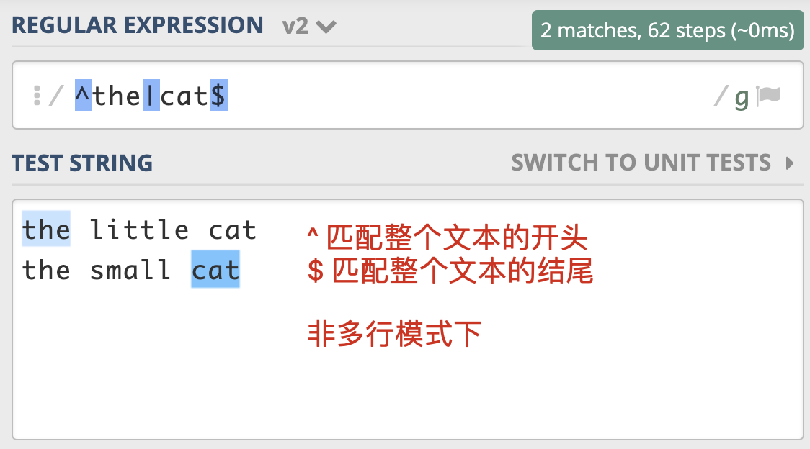
多行模式的作用在于，使 ^ 和 $ 能匹配上每行的开头或结尾，我们可以使用模式修饰符号 (?m) 来指定这个模式。
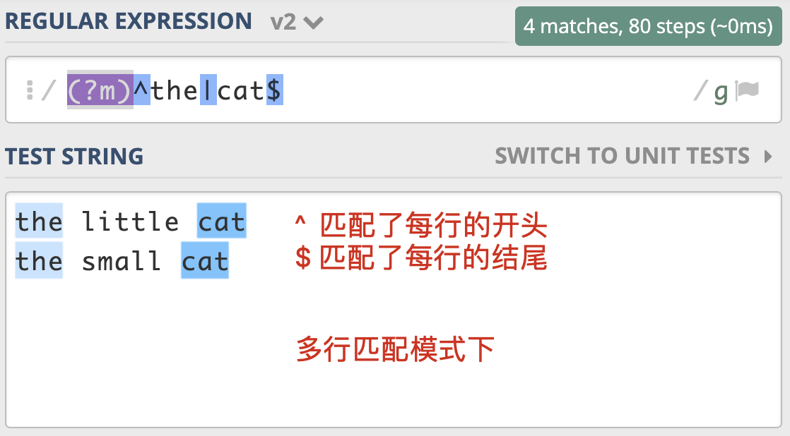
这个模式有什么用呢？在处理日志时，如果日志以时间开头，有一些日志打印了堆栈信息，占用了多行，我们就可以使用多行匹配模式，在日志中匹配到以时间开头的每一行日志。
值得一提的是，正则中还有 \A 和 \z（Python中是 \Z） 这两个元字符容易混淆，\A 仅匹配整个字符串的开始，\z 仅匹配整个字符串的结束，在多行匹配模式下，它们的匹配行为不会改变，如果只想匹配整个字符串，而不是匹配每一行，用这个更严谨一些。
注释模式（Comment）
在实际工作中，正则可能会很复杂，这就导致编写、阅读和维护正则都会很困难。我们在写代码的时候，通常会在一些关键的地方加上注释，让代码更易于理解。很多语言也支持在正则中添加注释，让正则更容易阅读和维护，这就是正则的注释模式。正则中注释模式是使用(?#comment) 来表示。
比如我们可以把单词重复出现一次的正则 (\w+) \1 写成下面这样，这样的话，就算不是很懂正则的人也可以通过注释看懂正则的意思。
(\w+)(?#word) \1(?#word repeat again)
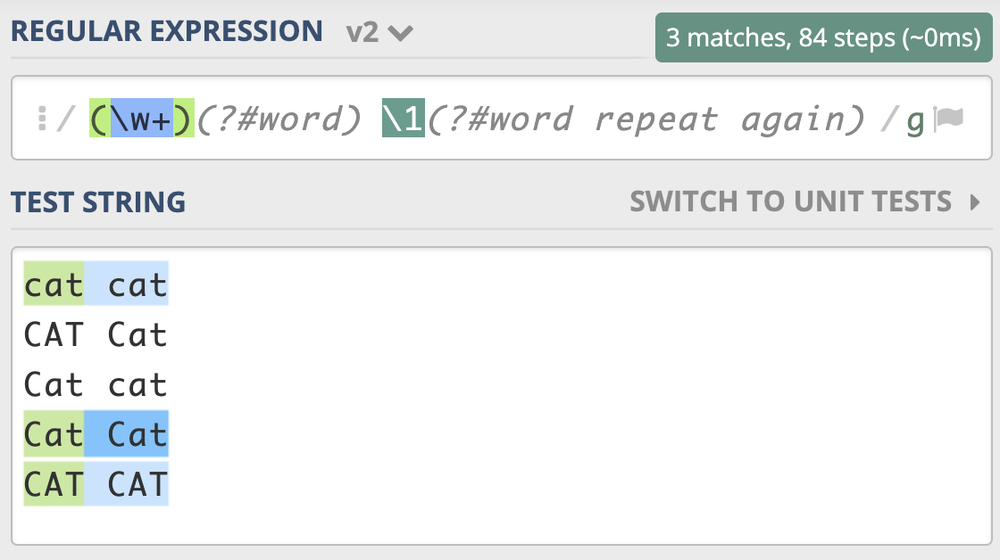
在很多编程语言中也提供了x模式来书写正则，也可以起到注释的作用。我用Python3给你举了一个例子，你可以参考一下。
import re
regex = r'''(?mx) # 使用多行模式和x模式
^ # 开头
(\d{4}) # 年
(\d{2}) # 月
$ # 结尾
'''
re.findall(regex, '202006\n202007')
# 输出结果 [('2020', '06'), ('2020', '07')]
需要注意的是在x模式下，所有的换行和空格都会被忽略。为了换行和空格的正确使用，我们可以通过把空格放入字符组中，或将空格转义来解决换行和空格的忽略问题。我下面给了你一个示例，你可以看看。
regex = r'''(?mx)
^ # 开头
(\d{4}) # 年
[ ] # 空格
(\d{2}) # 月
$ # 结尾
'''
re.findall(regex, '2020 06\n2020 07')
# 输出结果 [('2020', '06'), ('2020', '07')]
总结
最后，我来给你总结一下，正则中常见的四种匹配模式，分别是：不区分大小写、点号通配模式、多行模式和注释模式。
- 不区分大小写模式，它可以让整个正则或正则中某一部分进行不区分大小写的匹配。
- 点号通配模式也叫单行匹配，改变的是点号的匹配行为，让其可以匹配任何字符，包括换行。
- 多行匹配说的是 ^ 和 $ 的匹配行为，让其可以匹配上每行的开头或结尾。
- 注释模式则可以在正则中添加注释，让正则变得更容易阅读和维护。
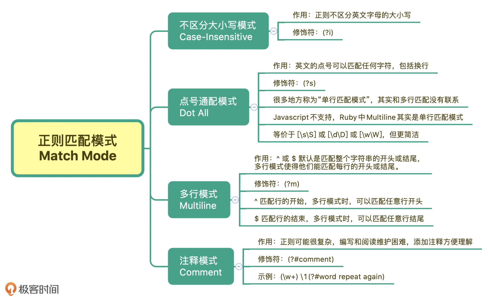
思考题
最后，我们来做一个小练习吧。HTML标签是不区分大小写的，比如我们要提取网页中的head 标签中的内容，用正则如何实现呢？
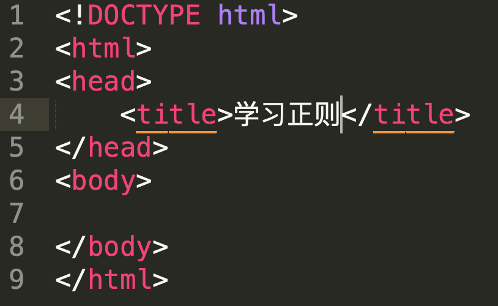
你可以动手试一试，用文本编辑器或你熟悉的编程语言来实现，经过不断练习你才能更好地掌握学习的内容。
今天的课程就结束了，希望可以帮助到你，也希望你在下方的留言区和我参与讨论。也欢迎把这篇文章分享给你的朋友或者同事，一起交流一下。
© 2019 - 2023 Liangliang Lee. Powered by gin and hexo-theme-book.